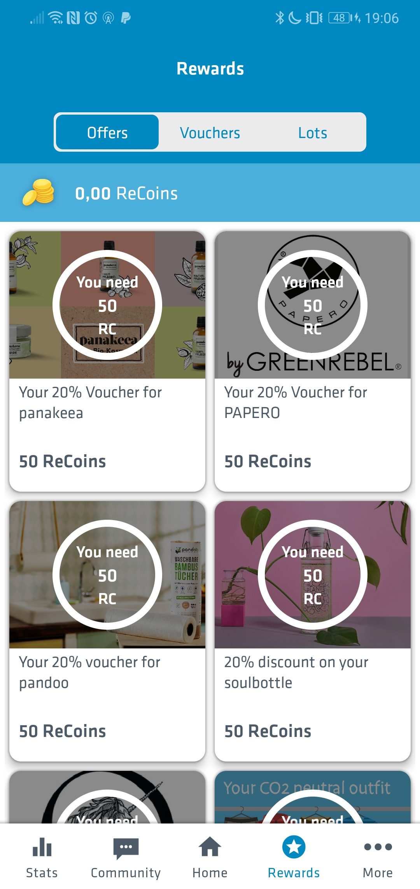
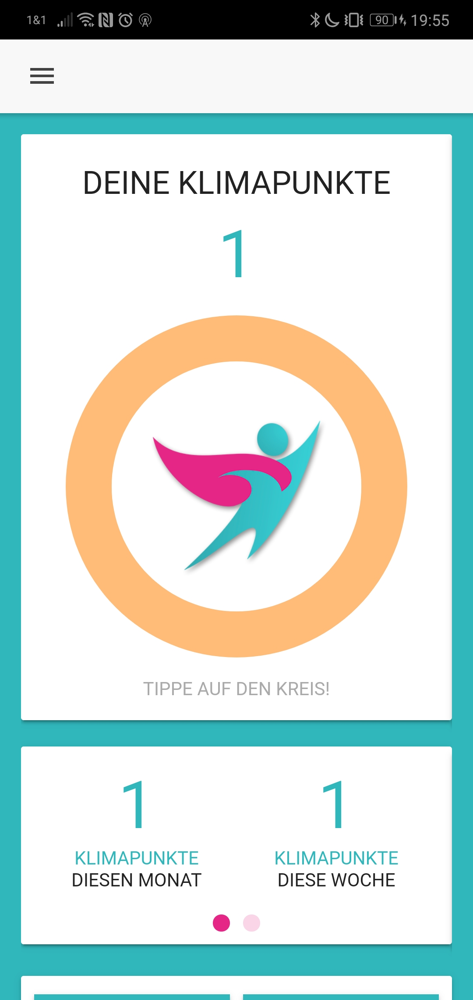
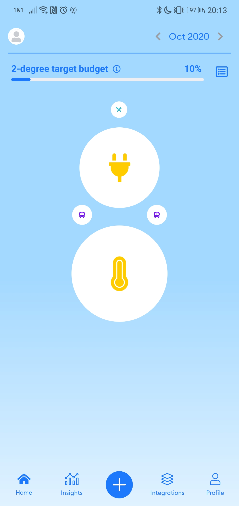
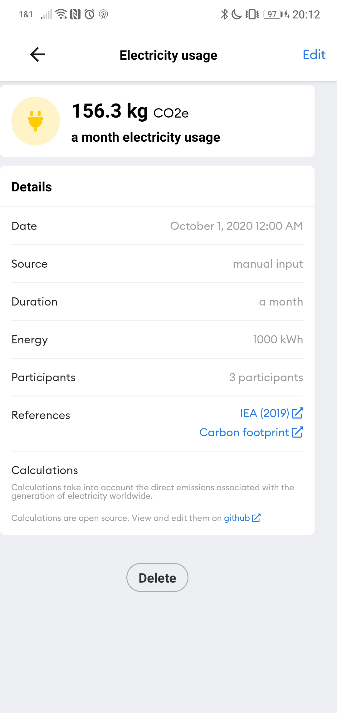
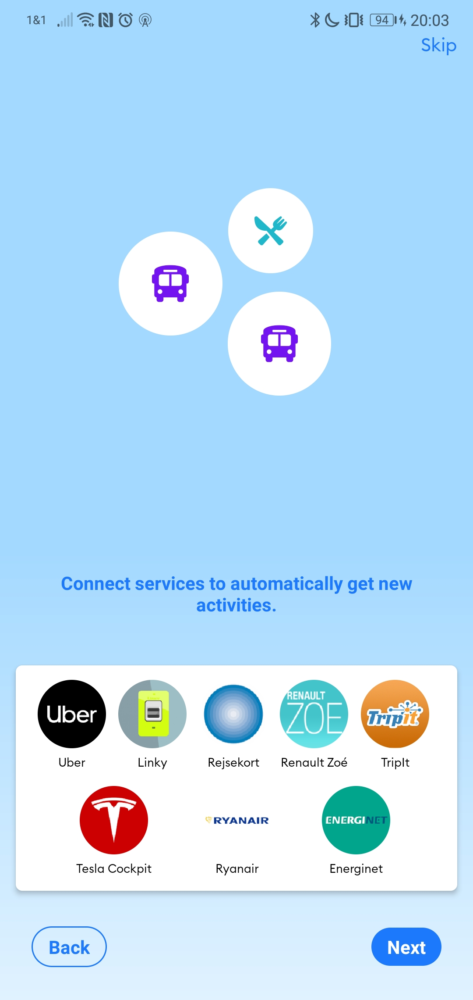
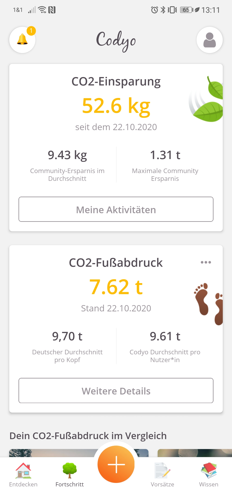

Unternehmensberatung in Umweltfragen, die App ist Werbung dafür
CO2- und Material-Footprint-Analysen für Ihre Produkte basierend auf eigener wissenschaftlicher Datenbank und 25 Jahren Erfahrung
CO2-Product-Footprint optimieren mit mehr als 200 Experten aus Ihrer Branche
Den CO2-Product-Footprint in der ersten CO2-tracking App für Konsumenten präsentieren: dem klimakompass
Berechnen, optimieren und managen Sie den CO2-Footprint Ihrer Produkte mit der SaaS- und API-Lösung ganz ohne Beratung – in Entwicklung – worldwatchers.org
Funktionen
CO2-Rechner
Flüge werden in Stunden pro Jahr abgefragt ( vielleicht ganz sinnvoll um < 1 Jahr Flieger nicht zu verlieren )
mein Ergebnis bei dem Rechner: 7,97t
Für Quellenangaben verlinkt die App auf die Website (diese gibt für jedes Feld im Test eine Quelle an) (nicht ganz leicht zu finden, sollten wir besser machen)
Challenges
nehmen keinen Bezug auf die Daten aus dem CO2 Rechner (wenn man dort angibt sich vegan zu ernähren ist die erste Challenge trotzdem “Mach einen veggie Day”)
geben Punkte
Punkte schalten mehr aufgaben frei
man kann die alle einfach so abklicken
man kann eine Challenge ‘failed’ markieren und dann sofort wieder entmarkieren
komplett App-haft (kaum Grafik-Elemente außer dem Photo auf dem Startschirm und dem Winkel)
leichte Gamification mit Punkten um Challenges freizuschalten
Online
keine Accounts
man kann Fortschritt mit einem Code speichern
Top USP: Bar-Code Scanner
Ich mag den Barcode-Scanner, ich glaube der Rest der App ist mehr Beiwerk.
Changers
Info
url: https://changers.com/de/
App Name: Changers Co2 Fit
Entwickelt von: Blacksquared GmbH
Rating: 3.2
Installs: 10,000+
Geschäftsmodell
teilnehmende Unternehmen sponsoren Bäume?
Sponsored Content in der ‘Rewards’ Sektion 
Funktionen
Fortbewegungsart tracking
nimmt auf mit welchem Fortbewegungsmittel man sich bewegt
summiert das so emittiert CO2
führt auch Stats über die Gesammt-Community
man kann nicht angeben, kein Auto zu besitzen
Community
Funktioniert so ähnlich wie unser v1 News-Feed
und besteht auch hauptsächlich aus Beschwerden über Nichtfunktionieren der App
Rewards
für gesammelte Punkte kann man Gutscheine freischalten
Unternehmen können mit ihrer Belegschaft Teilnehmen und dafür werden dann Bäume gepflanzt
Als einzelner Teilnehmer fühlt man sich etwas unwillkommen, da einem der Appstart zwei mal Fragt, welchem Unternehmen man angehört
Erscheinungsbild
einige grafische Elemente
sonst sehr iOS-Standard
Online
Account zwang um loslegen zu können
Top USP: Unternehmensintegration
Wirkt etwas wie die 1M€ Version von unserer ersten App. Uff, Datenkrake. Die Community-Stats sollte wir vielleicht auch so machen?
Klimahelden
Info
url: http://www.umweltzentrum-hannover.de/
App Name: KlimaHelden
Entwickelt von: Umweltzentrum Hannnover e.V.
Rating: 4.0 (25)
Installs: 5,000+
Geschäftsmodell
Gemeinnützig
Funktionen
Jeden Tag wird eine ‘Idee des Tages’ vorgeschlagen
man kann diese (und die der letzten 7 Tage) mit ‘Mache Ich!’ abschließen und bekommt dann 1 Klimapunkt
Erscheinungsbild
sehr stark Android Material Design Standaed
sieht sehr unfertig aus (Backbutton geht nicht, Titelzeile enthält keinen Titel, Punkte werden vergessen, warum tippe ich auf den Kreis?) 
Online
gibt es nicht
Top USP: Geringe Einstiegshürde, sehr einfach
North
Info
url: https://north-app.com/
App Name: North - Your Climate Journey
Entwickelt von: TMROW
Rating: 4.7 (56)
Installs: 1,000+
Geschäftsmodell
Seitenprojekt von einer Unternehmensberatungsfirma
Funktionen
Trackt CO2-Emission über zeit
stellt dies
Erscheinungsbild
Vistuell interessante Darstellung des Hauptschirms 
Alle anderen Screens sind sehr zweckmäßig 
Online
Kann Daten einer Reihe anderer Apps auslesen (wenn man dafür Berechtigungen gibt) 
Top USP: Darstellung
Codyo
Info
url: https://codyo.app/ (wir brauchen auch eine .app TLD)
App Name: Codyo: Klima-App
Entwickelt von: EWE AG
Rating: 4.6 (9)
Installs: 100+
Geschäftsmodell
Seitenprojekt der EWE
Unternehmensberatung (Unklar, was/wie das Kostet)? > Wir helfen Dir zu handeln >Unternehmerisches CO2-Management zielt auf die Erfassung, Vermeidung und aktive Minderung relevanter CO2-Emissionen ab. Nutze ab sofort unsere Codyo Klima-App in Scope 2 und 3 Deines Unternehmens, um CO2-Daten einfacher zu erfassen oder Mitarbeiter spielend in den Prozess der Klimaneutralität zu involvieren. – https://codyo.app/unternehmen/
Funktionen
CO2-Fußabdruck berechnen
Aktivitäten tracken
man kann jedes mal wenn man etwas bewusst Umweltfreundlicherers gemacht hat dies als Aktivität eintragen
so gespartes CO2 wird aufsummiert
die Aktivität kann im Community-Tab veröffentlicht werden
die so gesparten kgCO2eq können auch gegen ein selbst gesetztes Ziel gerechnet werden
Community Nachrichtenstrom der auch abgeschlossene Aktivitäten enthält 
Erscheinungsbild
viele bunte (nicht standard) Icons
viele Illustrationen und Stock-Bilder
aber sehr eindeutig App nicht Spiel
Online
pflicht Accounterstellung bevor man loslegen kann, ohne das einem die App vorher erklärt, was sie ist
Top USP: Freundliches design?
Eevie
Info
url: https://www.eevie.io/
App Name: eevie
Entwickelt von: eevie UG / Humboldt (?)
Rating: 3.6 (36)
Installs: 1,000+
Geschäftsmodell
Unternehmensberatung >Impact Partners - reward employees for climate-action and maximises workforce co2 reduction while offsetting only unavoidable emissions
eevie - provides platform, services and tools to track and reward impact progress
EMPLOYEES - are rewarded with trees for working together to change their habits and reduce their carbon footprint – https://www.eevie.io/en/business - Schon wieder Bäume pflanzen
Funktionen
Ermittelt CO2 Fußabdruck
habits
man kann verschiedene vorgeschlagene Gewohnheiten wählen (die App schlägt vor 3 stück zu verfolgen)
man wird regelmäßig an diese erinnert
und es zeigt an, wie weit man damit den CO2-Fußabdruck verringert hat
Offset
Communtiy (konnte ich noch nicht testen)
Erscheinungsbild
ziemlich App-standard mit etwas seltsamen Headern
die optisch spannenste Seite (Offset) ruckelt auf meinem Handy
Online
Optionaler Account
kann sich mit Freunden verbinden und deren Fortschritt sehen
Top USP: Partnerschaft mit Carbon Offset Projekten
Installs von ausschließlich umweltfokussierten Apps (Android, also kann man optimistisch alles mal 2 nehmen :P)
Klimakompass
Rating 3.8 (70)
Installs: 10.000+
Changers
Rating: 3.2
Installs: 10,000+
North
Rating: 4.7 (56)
Installs: 1,000+
Codyo
Rating: 4.6 (9)
Installs: 100+
Eevie
Rating: 3.6 (36)
Installs: 1,000+
Life Time Value (LTV) eines Nutzers
49% aller Nutzer_innen geben überhaupt Geld in F2P Spielen aus ‘Only 49% of players even make a single purchase in a game.’(@see https://cdn2.hubspot.net/hubfs/5516657/Monetization%20Report_final.pdf)
Falls wir ~ 1€ von 49% der Nutzer_innen kriegen können hat eine App-Installation einen LTV von 0.50 € mit einzelnen Microtransactions werden wir also nicht weit kommen
Falls wir einen ‘Seasonpass’ artiges Angebot haben, können wir das vervielfachen, falls wir Nutzer_innen langfristig halten können
einige Nutzer_innen sind bereit recht viel auszugebe
also gehen wir Wahlfischen?
Um 200.000€/Jahr zu erzielen brauchen wir also 400.000 aktive User